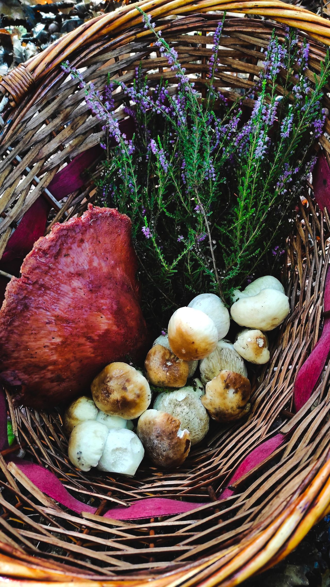
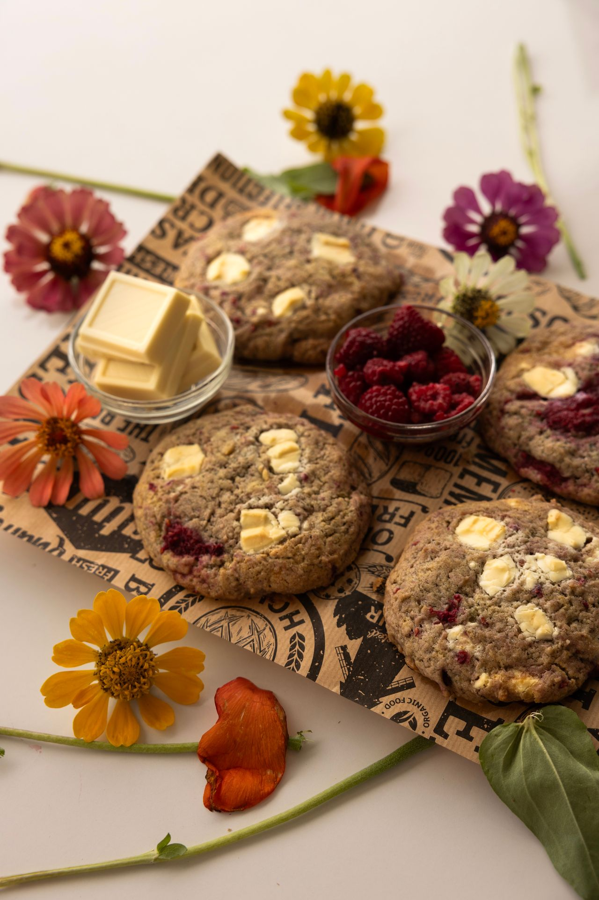

After foraging, through the flower woods for berries and edible nuts and plants, pelly is now hungry so she decides to bake flower cookies. She grabs the garden eggs(actual eggs that are grown) , honey suckle, flour, cashews, sugar cane, Euphorbia trigona

